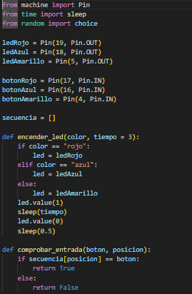
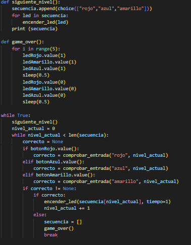

Este circuito representa el clásico juego "Simón dice". El ESP32 controla tres LEDs de diferentes colores (rojo, azul y amarillo), que se encienden siguiendo una secuencia que el jugador debe memorizar. Cada LED tiene un botón del mismo color. Cuando el ESP32 muestra una secuencia de luces, el jugador debe repetirla presionando los botones en el mismo orden. Si el jugador acierta, la secuencia se vuelve más larga y desafiante. Las resistencias protegen los LEDs y aseguran que los botones funcionen correctamente, permitiendo que el ESP32 detecte cuándo se presiona cada uno.
aqui puedes ver el circuito en la plataforma Wokwi:
Ver en WokwiEl código configura los pines del ESP32 para controlar tres LEDs (rojo, azul y amarillo) y tres botones, asignando cada uno a un pin específico como entrada o salida. Además, utiliza una lista llamada secuencia para almacenar el orden de colores que el jugador debe memorizar y repetir durante el juego.
El programa define funciones para encender los LEDs según el color y el tiempo indicados, comprobar si el botón presionado corresponde al color correcto de la secuencia, avanzar al siguiente nivel agregando un nuevo color aleatorio y mostrar el final del juego encendiendo todos los LEDs. En el bucle principal, el ESP32 muestra la secuencia al jugador y espera que repita el patrón usando los botones; si el jugador se equivoca, se activa la función de "game over" y el juego se reinicia, pero si acierta, la secuencia se hace más larga y el reto continúa.
